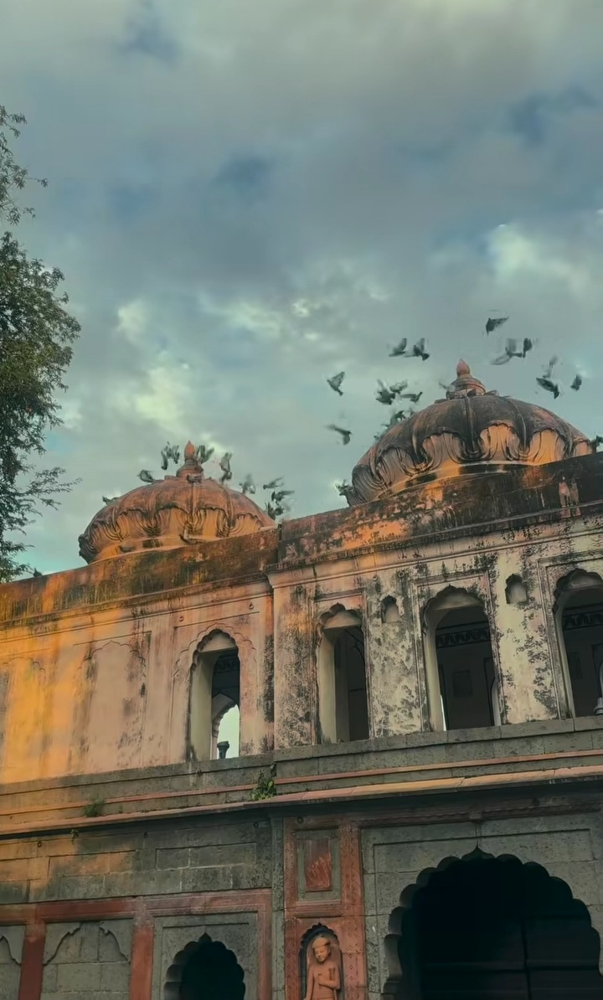
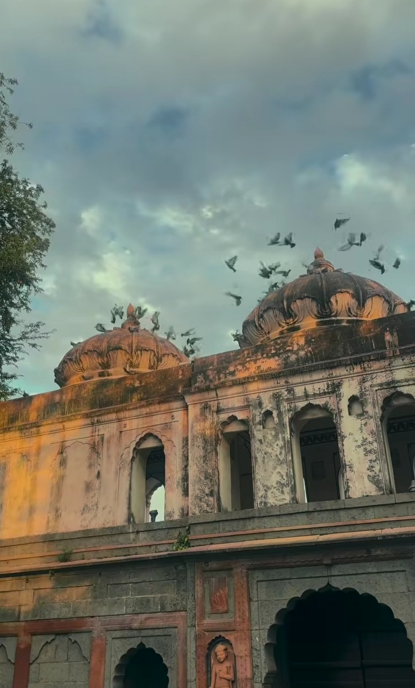

Discover Chhatri of Maharaja Harirao Holkar
Explore the architectural grandeur honoring Maharaja Harirao Holkar
Explore Now🛠Welcome to Hari Rao Holkar Chattri
"The Chhatri of Maharaja Harirao Holkar in Indore stands as a poignant reminder of the Holkar dynasty's legacy. This architectural marvel, a cenotaph dedicated to Maharani Harirao Holkar, showcases intricate craftsmanship and historical significance."
🛠Why Visit Chhatri of Maharaja Harirao Holkar?
✅ Architectural Marvel – Admire the intricate carvings and design of the Chhatri.
✅ Historical Significance – Learn about the Holkar dynasty and its rulers.
✅ Cultural Heritage – Experience the rich history and traditions of the region.
✅ Peaceful Ambiance – Reflect in the serene surroundings of the Chhatri.
Visit the Chhatri of Maharaja Harirao Holkar and delve into Indore's royal past.
🌿🏞 Best Things to Do at Chhatri of Maharani Harirao Holkar
✅ Explore the architecture and intricate details of the Chhatri.
✅ Learn about the history of Maharani Harirao Holkar and the Holkar dynasty.
✅ Take photographs of the beautiful structure and its surroundings.
✅ Reflect and pay respects to the Maharani.
“The best time to visit is during the day to appreciate the architecture fully.”
🂠Best Time to Visit
All year round. However, avoid visiting during the peak heat of summer (March-June) for a more comfortable experience.
♻🌿 Safety & Travel Tips
✅ Dress respectfully when visiting the Chhatri.
✅ Maintain silence and respect the historical significance of the site.
✅ Be mindful of the surroundings and avoid littering.
✅ Check for any specific visiting hours or restrictions before your visit.
“Preserve the historical and cultural significance of the Chhatri.”
Note: Keep the environment clean and respect nature! 🌱💧
📸 Photo Gallery
 
